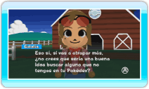
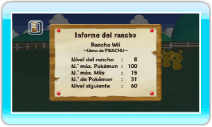

16 |
Tablón de anuncios |
 |

● SE BUSCA “SE BUSCA” es un anuncio que pone Eulalia con el Pokémon que quiere que lleves al rancho en ese momento. Esto sucederá a partir de la primera vez que deposites Pokémon desde Pokémon Edición Diamante o Pokémon Edición Perla en el rancho. Los anuncios de “SE BUSCA” no estarán siempre activos; pasado un tiempo serán retirados.
Los Pokémon que aparecen en los anuncios de “SE BUSCA” son por lo general Pokémon que no has capturado o intercambiado en Pokémon Edición Diamante o Pokémon Edición Perla (según los datos de la Pokédex). Si capturas el Pokémon que se busca y lo llevas al rancho, aparecerá un nuevo anuncio de “SE BUSCA”. Si vas llevando al rancho los Pokémon que se buscan, ¡al final conseguirás completar tu Pokédex! ¡Aprovecha la ocasión y completa la Pokédex Nacional!
En la pantalla de SE BUSCA, si apuntas hacia un Pokémon y pulsas Nota: La primera vez que deposites un Pokémon en el rancho, no aparecerá ningún registro de Pokémon buscados conseguidos. Se creará un registro a partir de la segunda vez.
Una vez que hayas conseguido uno de los Pokémon buscados, puedes consultar el historial de Pokémon buscados conseguidos. Para ello, apunta hacia la flecha de la parte inferior de la pantalla y pulsa
Cuando deposites uno de los Pokémon que se buscan en el rancho, Eulalia te pedirá de vez en cuando que intercambies un Pokémon con ella. El Pokémon que intercambies con Eulalia aparecerá en el rancho a partir de ese momento como Pokémon de Eulalia. Además, podrás retirar del rancho el Pokémon que hayas conseguido del intercambio con Eulalia. Sin embargo, no podrás retirar el Pokémon que le hayas dado a Eulalia para enviarlo a tu tarjeta DS de Pokémon Edición Diamante o Pokémon Edición Perla. 
● Informe del rancho Aquí podrás consultar, entre otros datos, el nivel de tu rancho, el número de Pokémon que tienes o el número máximo de Miis que puedes llevar a tu rancho. |
 , podrás consultar las condiciones necesarias para capturarlo e información sobre cómo hacerlo. Si Eulalia te pide varios Pokémon a la vez, apunta hacia la flecha verde y pulsa
, podrás consultar las condiciones necesarias para capturarlo e información sobre cómo hacerlo. Si Eulalia te pide varios Pokémon a la vez, apunta hacia la flecha verde y pulsa  |
 |
 |